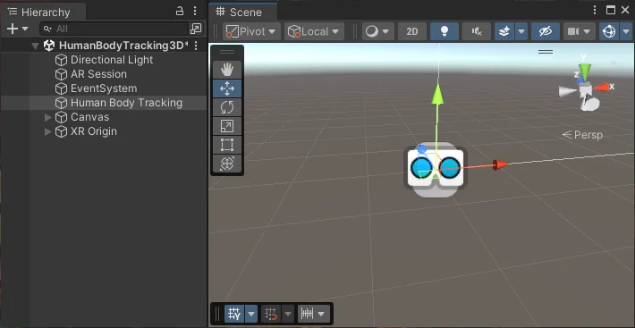

Get started with augmented reality (AR) development in Unity.
AR involves a different set of design challenges compared to virtual reality (VR) or traditional real-time 3D applications. An augmented reality app overlays its content on the real world around the user. AR devices, such as glasses, visors, or mobile devices, use transparent displays to allow the user to view the real world with virtual content overlaid on top.
To place an object in the real world, you must first determine where to place it. For example, you might want to place a virtual painting on a physical wall. If you place a virtual potted plant, you might want it on a physical table or the floor. An AR app receives information about the world from the user’s device, and decides how to use this information to create a good experience for the user. Depending on target device capabilities, this information includes location of planar surfaces (planes), and the detection of objects, people, and faces.
The following sections provide an overview of an AR scene, the AR packages, and AR template you can use to develop AR applications in Unity.
When you open a typical AR scene in Unity, you will not find many 3D objects in the Scene or the Hierarchy view. Instead, most GameObjects in the scene define the settings and logic of the app. 3D content is typically created as prefabs, and added to the scene at runtime in response to AR-related events.

The following sections outline the Required scene elements to make AR work, and the Optional scene elements you can add to enable specific AR features. To learn more about how to configure an XR scene Set up an XR scene.
Note: AR GameObjects appear in the create menu when you enable an AR provider plug-in in XR Plug-in Management.
An AR scene must contain the AR Session and XR Origin GameObjects. The available options for the XR Origin depend on the packages you have installed in your project. AR Foundation uses the Mobile AR and XR Interaction Toolkit uses the AR variant.
If you start your project from an AR template, these components will come configured in the scene.
To manually add the relevant XR Origin and AR Session GameObjects:
Note: You must only have one active XR Origin in a scene.
The AR Session GameObject contains the components you need to control the lifecycle and input of AR experience:
The XR Origin (Mobile AR) GameObject is a variant of the XR Origin for handheld/mobile AR applications. This variant isn’t configured for controller input by default. AR Foundation uses this version of the XR Origin.
The XR Origin (Mobile AR) GameObject consists of the following components:
For more information, refer to AR Foundation Set up your scene and Device tracking.
To enable an AR feature, you must add the corresponding components to your project. Typically, this includes an AR Manager, but other features might also require additional components.
To learn more about the required components for AR Foundation features, refer to the documentation for the relevant AR Foundation Feature. For more in-depth information about setting up your AR Foundation app, visit Scene set up.
To build AR apps in Unity, you can install the AR Foundation package along with the XR provider plug-ins for the devices you want to support.
To develop AR and mixed reality (MR) apps for the Apple Vision Pro device, you also need the PolySpatial visionOS packages. Unity provides additional packages, including the XR Interaction Toolkit to make it easier and faster to develop AR experiences.
AR platforms are available as provider plug-ins by the XR Plug-in Management system. To understand how to use the XR Plug-in Management system to add and enable provider plug-ins for your target platforms, refer to XR Project set up.
The AR provider plug-ins supported by Unity include:
| Plug-in | Supported devices |
|---|---|
| Apple ARKit XR Plug-in | iOS |
| Apple visionOS XR Plug-in | visionOS |
| Google ARCore XR Plug-in | Android |
| OpenXR Plug-in | Devices with an OpenXR runtime |
Note: Depending on the platform or device, you might need to install an additional package along with the OpenXR Plug-in. For details, refer to Android XR and Meta Quest.
The AR Foundation package supports AR development in Unity.
AR Foundation enables you to create multiplatform AR apps with Unity. In an AR Foundation project, you choose which AR features to enable by adding the corresponding manager components to your scene. When you build and run your app on an AR device, AR Foundation enables these features using the platform’s native AR SDK, so you can create once and deploy to the world’s leading AR platforms.
A device can be AR-capable without supporting all possible AR features. Available functionality depends on both the device platform and the capabilities of the specific device. Even on the same platform, capabilities can vary from device to device. For example, a specific device model might support AR through its world-facing camera, but not its user-facing camera. To learn which platforms support each AR Foundation feature, refer to the Platform support table in the AR Foundation documentation.
You can access samples scenes that demonstrate AR Foundation features from the AR Foundation Samples app (GitHub). To learn more, refer to AR Foundation samples in the AR Foundation package documentation.
Augmented and mixed reality development for the Apple Vision Pro device relies on a set of packages that implement the Unity PolySpatial architecture on the visionOS platform.
The PolySpatial architecture splits a Unity game or app into two logical pieces: a simulation controller and a presentation view. The simulation controller drives all app-specific logic, such as MonoBehaviour and other scripting, user interface behavior, asset management, and physics. Most of your game’s behavior is also part of the simulation. The presentation view handles both input and output, which includes rendering to the display and other forms of output, such as audio. The view sends input received from the operating system, including pinch gestures and head position, to the simulation for processing each frame. After each simulation step, the view updates the display by rendering pixels to the screen and submitting audio buffers to the system.
On the visionOS platform, the simulation part runs in a Unity Player, while Apple’s RealityKit renders the presentation view. For every visible object in the simulation, a corresponding object exists in the RealityKit scene graph.
Note: PolySpatial is only used for augmented and mixed reality on the Apple Vision Pro. Virtual reality and windowed apps run in a Unity Player that also controls rendering (using the Apple Metal graphics API).
Unity supports Android XR devices, including XREAL AURA and Samsung Galaxy XR, through the OpenXR Plug-in and the Unity OpenXR: Android XR package.
XREAL AURA is the first pair of XR glasses that Unity supports. You can build both augmented reality and fully immersive experiences for these devices. While Android XR devices support hand tracking, XREAL AURA uses transparent displays and adds touchpad input from its compute puck. The puck is a tethered processing unit the size of a phone that includes a battery and touch controller. The XREAL AURA also has a smaller field of view than headset devices and doesn’t support eye tracking. Account for these differences when designing for XREAL AURA.
To develop for XREAL AURA, use Unity 6.5 or later. For build profile and package setup, refer to Develop for Android XR.
Unity supports Meta Quest devices through the OpenXR Plug-in. For full feature availability, also install the Unity OpenXR: Meta package.
For build profile and package setup, refer to Develop for Meta Quest.
The Unity XR Interaction Toolkit provides tools for building both AR and VR interactions. The AR functionality provided by the XR Interaction Toolkit includes:
Unity’s AR Mobile template provides a starting point for augmented reality development in Unity. This template configures project settings, pre-installs necessary packages, and includes sample scenes with various pre-configured example assets to demonstrate an AR-ready project. You can access the template through the Unity Hub when you create a new project. Refer to Create a new project for information about creating a project with the template.
For more information about the template assets and sample scene, refer to the AR Mobile template documentation.